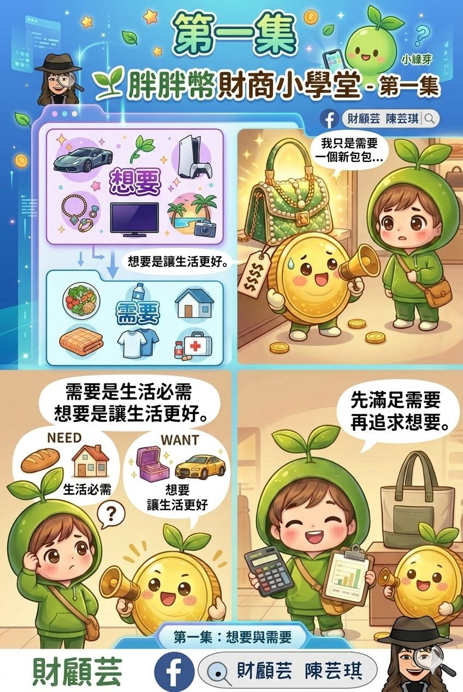

胖胖幣財商小學堂 · 第一集
想要，還是需要？
理財不是不能花錢，而是先看清生活的需要，再決定想要的東西值不值得帶回家。

很多人存不到錢，其實不一定是因為收入不夠，而是我們常常把「想要」當成「需要」。
看到喜歡的東西，大腦很快就會開始說服自己：「這個可以提升工作效率」、「這是犒賞自己」、「這個其實很必要」。但仔細想想，有些東西也許只是想要一點快樂。
想要與需要，有什麼不一樣？
需要，是維持生活不可缺少的事物，例如食物、住家、基本衣物與醫療。
想要，是讓生活更舒服、更方便或更開心的選擇。想要並沒有不好，只是要放在適合的順序。
先滿足生活的需要，再慢慢追求生活的想要。當順序對了，財務就會慢慢變穩定。
買下來以前，先問自己三件事
- 如果今天不買，生活真的會受到影響嗎？
- 這筆花費會不會擠壓到原本要支付或儲蓄的錢？
- 過幾天再看，我還會一樣想買嗎？
不用每一次都做出最完美的選擇。先停一下、想一下，就是開始整理金錢的第一步。
留一個問題給自己
最近買的一樣東西，是「想要」還是「需要」？
沒有標準答案。看懂當時做選擇的原因，就更靠近適合自己的理財方式。
到財顧芸 Facebook 分享想法把照顧、退休與想留給家人的事放在同一張圖上看。